Other Security
At this point, we have taken a tour around the OneStream neighborhood, including the application and system databases, users and groups, objects and data, roles and pages, and the hundreds of tables supporting all those items. We are now ready to leave the confines of our neighborhood and branch out to ‘other’ security.
Other security goes beyond these fundamental building blocks of all customers’ OneStream security. While the prior chapters covered security that can be found in every customer environment and application, this chapter will delve into security that can be extended or added to your OneStream application or environment. The concepts covered in this chapter may not be used on every project or in every customer application; however, they are important enough to be covered in a book on OneStream security.
Other Security
Slice Security
Many people may have heard of slice security, like a buzzword, but do not fully understand what it is, or have had the opportunity to leverage it. First, you will want to understand what it is and why you may want to leverage it on your project or in your application.
Slice security, known formally as Cube Data Access security, allows you to grant security to any or all 18 OneStream cube dimensions at a granular level of detail:
Entity & Parent
Consolidation
Scenario
Time
View
Account, Flow & UD1-8
Origin
IC
As we learned in prior chapters, there are out-of-the-box data security groups associated with the cube, entity, and scenario, as shown in Figure 7.1. And these data security groups work in conjunction with each other, meaning if you have Access Group to a cube, along with Read and Write Data Group to an entity, but have only Read Data Group to a particular scenario, then you will have the lesser of those rights, or read-only access, to that cube, entity, and scenario combination.
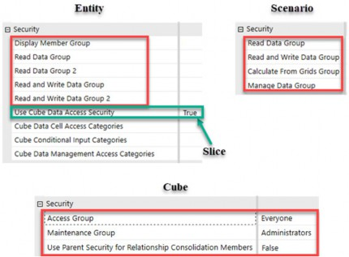
Figure 7.1
But what happens when securing your data by cube, entity, and scenario alone is not enough? Or when perhaps you want to be more granular or dynamic in how you apply your entity or scenario security? This is where Slice Security comes into play.
Slice security is set up on the cube (as we will see later in this section), but the starting point for turning on slice security resides within the Entity dimension. The True/False toggle switch (in Figure 7.1) that tells OneStream to continue to look at the cube for additional access rights is set at each entity.
If you are not using slice security, this setting should be False across all entities at all levels. By setting this to false, OneStream stops after applying the Display Member Group, Read Data Group and Read and Write Data Group listed on each entity, rather than continuing to the cube for further data access application.
To turn on slice security at the cube level, you will start by setting this to True across all entities where you want to apply more granular slice security. This means you can determine, by entity, whether you want OneStream to look to the cube for additional security, as shown in Figure 7.2.
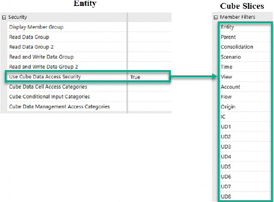
Figure 7.2
In general, if you are using slice security to apply a more granular level of data access by Account, Flow, or UD1-8, you will want to do so for all entities. But just know that does not have to be the case.
Say, for example, that you only need additional data security at a base entity level to control data entry by Account, Flow, or UDs. You can, therefore, set this toggle to true only for base entities, as base entities are where data entry happens. For all parent entities, you could leave this set to false.
Why is this important to understand? Because enabling slice security can have performance implications. Let us stick a pin in this for now, but just know that, unless you need an entity to look to the cube for additional data security access, it is best to leave those entities set to false.
Other Security › Slice Security
Use Cases
The most common use case for applying slice security is when you have a User Defined dimension (UD1-8) to which you want to restrict access. If you recall from Chapter 5, Account, Flow, and the User Defined dimensions have only one security group associated with them, a Display Member Group, as shown again in Figure 7.3.
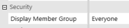
Figure 7.3
This display member group only controls whether people can see this member or not. It does not allow you to control whether a user has read or write access to a particular UD member. Therefore, if you need to secure a User Defined dimension, you will need to use slice security.
Another less often considered use case can be applying dynamic security to any of your 18 dimensions. Let us walk through two use cases around dynamic security – using slices – to get a better understanding.
For the first use case, imagine you have an entity hierarchy that is often changing: say your Entity dimension represents sales regions, and those regions are often reorganized. Applying slice security to your Entity dimension can help reduce overall security maintenance.
Changing your Entity dimension necessitates the need for re-consolidations or re-aggregations of historical data, but some companies may make frequent entity hierarchy changes. If you are only using the read and write groups at the entity level, and/or relying upon nesting your security groups to control entity access, you could be left with a maintenance nightmare of constantly updating security groups and security group nesting as your entity structure changes.
Let us walk through an example to understand this use case better. Imagine that your entity hierarchy appears as on the left (Figure 7.4), and you want to grant read access to users responsible for Territory 1 to the cities in Territory 1. If you were not using slice security, your security group nesting may appear as per Figure 7.4 on the right.
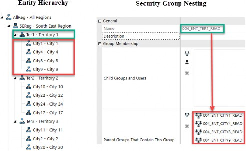
Figure 7.4
As you can see in the entity hierarchy on the left, Territory 1 includes Cities 1, 4, 8, and 9. To achieve the goal of granting read access to all cities in Territory 1 to users who are allowed to read Territory 1, without slice security, your nesting would include the read entity security groups (004_ENT_CITY1/4/8/9_READ) for each of those four cities in the Parent Group box of the Territory 1 read group (004_ENT_TER1_READ), as shown on the right of Figure 7.4.
So, what happens when changes are made to that entity hierarchy? Say, for example, you move City 8 to Territory 2 due to a sales reorganization. What needs to then be done with your security groups to reflect this entity hierarchy change?
You will need to not only update your entity hierarchy (as shown on the left in Figure 7.5) but also update your security group nesting as shown on the right. You will want to remove 004_ENT_CITY8_READ from being nested within the 004_ENT_TER1_READ security group, and instead add 004_ENT_CITY8_READ to the 004_ENT_TER2_READ security group.
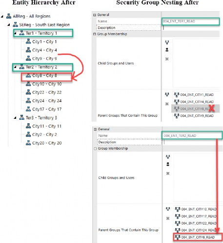
Figure 7.5
Every time your sales regions are reorganized, you will need to constantly update the security group nesting if you want to control who can read and write to the various members within a region. You can see how this can become a security nightmare over time if the sales regions are constantly changing.
To avoid this, you can apply slice security to your Entity dimension. Slice security allows you to create a Member Filter that can include .TreeDescendants to a parent entity. This means that, as your entity hierarchy changes, the slice security filter (which includes, for example, Ter1.TreeDescendants or Ter2.TreeDescendants) will dynamically update security rights.
For the same sales reorganization discussed above, no changes would need to be made to security. The act of changing the entity hierarchy alone, to move City 8 from
Territory 1 to Territory 2, would be enough. This is because slice security can be used to apply member security to entities in a dynamic fashion.
Let us talk about another possible use case for using slice security dynamically. Imagine that you have a group of users (000_GRP_CORPUSERS) that are only allowed to view Actual data after it has been finalized by the regions.
Effectively, you want to block these corporate users from seeing Actual data for a given month, until the regions have completed their work. In this example, you can use slice security – combining both the Actual scenario with your Time dimension – so that, at the beginning of a closing cycle, the Actual data for that month (and subsequent months) is not visible to a subset of users (000_GRP_CORPUSERS).
A set of 12 slices, each focusing on the Time dimension for a given month and year (T#YYYY.TreeDescendantsInclusive.Remove(YYYYM1)), combined with scenario, can be used to achieve this goal. In the next section, we will walk through how to apply slice security to achieve goals such as these use cases and beyond.
Other Security › Slice Security
Applying Slice Security
As noted in Figure 7.1, the first action in setting up slice security is setting the applicable entities to True. Then what?
Every cube (whether stand-alone, linked base, or top-level cube) has a Data Access tab. This Data Access tab controls access to all data that resides within a particular cube once you have set the entity toggle to True.
As shown in Figure 7.6, the Data Access tab contains three sections:
Data Cell Access Security
Data Cell Conditional Input
Data Management Access Security
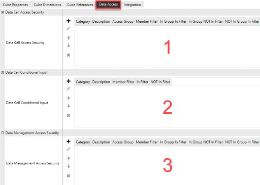
Figure 7.6
Other Security › Slice Security › Applying Slice Security
Data Cell Access Security
This section is where rules can be created to decrease or increase access to data at a more granular level than Application > Cube > Entity > Scenario.
No Access, Read Only, or All Access (aka modify or write access) can be granted to a group of data cells down to a single data cell.
To be able to view or modify an entity’s data, a user must have read or write access to the entity through standard entity security (shown in Figure 7.1). If the Use Cube Data Access Group for that entity has been set to False, the user will have access to every single data cell for that particular entity (combined with their scenario security).
If, however, the entity’s Use Cube Data Access Group has been set to True, OneStream will look to the cube’s Data Access tab to further determine how security is applied. If set to True and you do not define anything on the Cube Data Access tab, the user will retain full access to all data cells for that entity. This is the equivalent of having that entity set to False for Use Cube Data Access Group. But, as mentioned earlier, if you do not have any slices, then you want to leave the entity as False, as that is more performant.
Let us look at how you can create slices of data to refine the security for a particular entity. The starting point for creating data cell slices is shown in Figure 7.7.
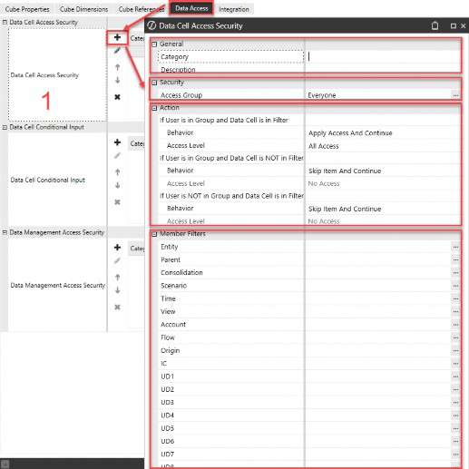
Figure 7.7
There are four parts to creating a data cell slice:
General
Security
Action
Member Filters
Other Security › Slice Security › Applying Slice Security › Data Cell Access Security
General
The Category is an optional free-form field (limited to 100 characters) that exists at the entity level, and also on any slices you create on the cube.
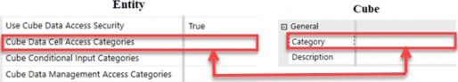
Figure 7.8
Categories allow you to create broad groupings of slices, and then potentially only apply relevant slices to certain entities. For example, if you have 200 slices on the cube but maybe those fit into 20 broad categories, you could then decide – entity by entity – which categories of slices need to be evaluated for a particular entity.
Therefore, you can improve performance by only having each entity look to those slices that are required to determine access.
The Description is an optional free-form field (limited to 200 characters) to add a description for the data access rule.
Other Security › Slice Security › Applying Slice Security › Data Cell Access Security
Security
Access Group is a security group that is set up on the System > Security tab. Here, users are assigned, and Data Cell Access security roles applied. Using the naming convention established in Chapter 3, it may be 006_UD1_FINANCE_READ or 006_UD1_FINANCE_WRITE if you are securing UD1, which may represent cost centers, as an example.
Other Security › Slice Security › Applying Slice Security › Data Cell Access Security
Action
The most important part of creating slice security is in the “Action” section. It is here that you will define how security is applied depending on three criteria:
User is in Group, and Data Cell is in Filter
User is in Group, and Data Cell is NOT in Filter
User is NOT in Group, and Data Cell is in Filter
It is the application of these actions that will have the most impact on the performance of your slice security. As mentioned previously, a performance cost is associated with applying slice security.
In applying slice security, you are asking OneStream to take an extra step in evaluating each intersection of data, whether in a Cube View, Excel, Workflow import, form, journal, or dashboard, to decide whether that intersection is read, write, or no access for that user.
Without slice security, the Data Unit dimensions of Cube, Entity, and Scenario control access to all data intersections. This is a quicker evaluation process because you are not asking OneStream to be any more granular in applying security than to the entire Data Unit as a whole.
| As a rule of thumb, you will want to create your slices in the order they will be applied to the most users first (cast the widest net first) and apply the STOP action (exit the evaluation process) when possible. |
How significant the performance implications of applying slice security will be largely depends on two factors: how you define the three actions, and the order of operation in which you create your slices.
There are eight Behaviors in the Action section that will determine how each intersection of data is treated:
Skip Item and Continue: Default if user is in group and data cell is not in filter, or if user is not in group and data cell is in filter.
Skip Item and Stop: Skip a slice and stop evaluating the remaining slices.
Apply Access and Continue: Default if user is in group and data cell is in filter.
Apply Access and Stop: Apply access to a slice and stop evaluating the remaining slices.
Increase Access and Continue: Increase access to a slice and continue evaluating the remaining slices.
Increase Access and Stop: Increase access to a slice and then stop evaluating the remaining slices.
Decrease Access and Continue: Decrease access to a slice and then continue evaluating the remaining slices.
Decrease Access and Stop: Decrease access to a slice and then stop evaluating the remaining slices.
There are three Access Levels associated with the behaviors above:
No Access: Prevents users from read or write access to cells in the filter.
Read Only: Allows users to read cells in the filter.
All Access: Allows users to write to cells in the filter.
Other Security › Slice Security › Applying Slice Security › Data Cell Access Security
Member Filter
This section is used to define the dimension members required as part of Data Cell Access to allow or deny access to specific intersections of data.
The filter can be a singular dimension and dimension member(s), or a combination of multiple dimensions and members. For example, if your security applies to a particular scenario in conjunction with a particular UD, it will be the combination of those two dimensions within a single slice that will be applied to the data access (e.g., both filter conditions need to be met before slice is applied).
If, however, you want specific UD security applied to all scenarios, then you will only fill out the UD dimension by itself for a single slice. Thus, it will stand on its own, meaning that slice will apply to all scenarios of data.
As shown in Figure 7.9, the Member Filter box employs the same syntax as used throughout the application.
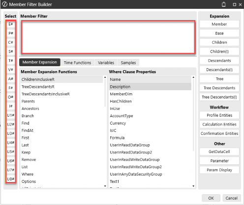
Figure 7.9
As you can imagine from the Member Filter builder, you can apply filters for specific intersections of data in almost a limitless number of combinations. You can use
.Remove(), .Where(), .Descendants(I), etc., to build out your filters to very granular intersections or data cells. When doing so, keep in mind that you want to apply the filters and slices in the most efficient way possible (capturing most use cases first and using STOP when possible).
The easiest way to understand how to construct slices is to walk through an example. So, let’s do so.
Suppose you have a Cost Center dimension (U1) that appears as per Figure 7.10.
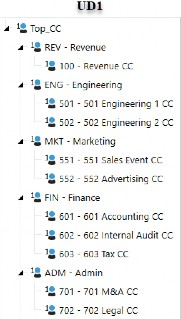
Figure 7.10
Now, let us suppose that you have the following security requirements:
For the Budget scenario, you want to control write access to cost centers
For the Budget scenario, you also want to control read access to cost centers
For the Budget scenario, you have some users who can write to all cost centers
For the Budget scenario, you have some users who can read all cost centers
These rules will not apply to the Actual scenario of data
How will you achieve this? In the next section, we will go over the basic steps to set up slice security to achieve the above goals. Keep in mind that the steps detailed can apply to dynamic entity security, dynamic time security, or any other combination of 18 dimensions for which you want to apply granular security.
Other Security › Slice Security › Applying Slice Security › Data Cell Access Security
Step 1
First, you will want to create the security groups needed to achieve the desired access on the System > Security tab. Using the naming conventions established in Chapter 3, this may look like Figure 7.11:
| Security Group from System Tab | Description of Access |
|---|---|
| 006_UD1_ALL_READ / WRITE | Group for users that will have access to all cost center(s). |
| 006_UD1_REV_READ / WRITE | Group for users that will have access to revenue cost center(s). |
| 006_UD1_ENG_READ / WRITE | Group for users that will have access to engineering cost center(s). |
| 006_UD1_MKT_READ / WRITE | Group for users that will have access to marketing cost center(s). |
| 006_UD1_FIN_READ / WRITE | Group for users that will have access to finance cost center(s). |
| 006_UD1_ADM_READ / WRITE | Group for users that will have access to admin cost center(s). |
Figure 7.11
As seen in Figure 7.12, we will assume you have already set up the following groups, which apply to other security rules discussed in prior chapters:
| Security Group from System Tab | Description of Access |
|---|---|
| 001_APP_VIEWALLDATA | Security group applied to Application Security Role to grant view to all data |
| 001_APP_MODIFYDATA | Security group applied to Application Security Role to allow modification of data (when coupled with other security) |
| 002_CUBE_FINPRT | Security group granting access to the FinRpt cube |
| 003_SCN_ACTUAL_READ / WRITE | Security group granting access to read or write to Actual data. |
| Security Group from System Tab | Description of Access |
|---|---|
| 003_SCN_BUDGET_READ / WRITE | Security group granting access to read or write to Budget data. |
| 004_ENT_ALLCOMPANY_READ / WRITE | Security group granting access to read or write to all entities data. |
| 005_WF_ACTUAL_E | Security group granting workflow execution rights to an Actual WF. |
| 005_WF_BUDGET_E | Security group granting workflow execution rights to a Budget WF. |
Figure 7.12
Once your security groups are set up on the System > Security tab and users have been appropriately embedded into those groups, you are ready to move on.
Other Security › Slice Security › Applying Slice Security › Data Cell Access Security
Step 2
Next up, go to your Entity dimension(s) and set all entities – for which you want this additional layer of security to apply – as True for their Use Cube Data Access Security.
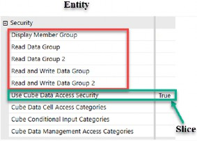
Figure 7.13
Other Security › Slice Security › Applying Slice Security › Data Cell Access Security
Step 3
The third step to applying slice security is to go to the Data Access tab for whatever cube(s) you want to apply slice security to. If you have vertically integrated (aka linked cubes), you will want to set up your slice security across all linked cubes. The reason for this extra step with linked cubes is because the Entity dimension can be shared among cubes; therefore, to accurately apply data access security, the same slices need to be set up across all cubes to which those entities are shared. I recommend starting with one cube first, and once tested, extract those slices to an XML file and copy the same slices into the remaining linked cubes.
I like to start slice security with the users who are in the 006_UD1_ALL_READ or 006_UD1_ALL_WRITE groups first. My assumption is that the majority of users will fall into one of these two security groups, so to prevent OneStream from unnecessarily continuing to evaluate additional slices, I build these two broad slices first and then apply the “stop” action.
Then, the remaining slices (006_UD1_XXX_READ / WRITE) can be built to increase access based upon the filter criteria. Since the remaining slices are granting security back (that was removed in the first slice) and are all “continue” slices (since people could exist in multiple slices), these can appear in any order.
Figure 7.14 shows the culmination of how slice security can be set up on the cube(s) to achieve the desired results.
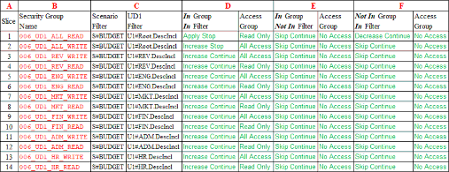
Figure 7.14
Column A shows the order of operation of how the slices will be applied. Again, the first two slices are capturing all read or all write users and thus apply the Stop behavior in column D. If a user is not in the first slice, then all access is removed in column F with Decrease to No Access. If a user is in the first or second slice, that access is granted via column D and Stop can be used as the remaining slices do not need to be evaluated.
If a person is not in the first two slices, now the process of evaluating the remaining slices (numbers 3 to 14 in column A) begins. For all remaining slices, the assumption is that a user may be in one or more security groups to Increase access to various cost centers; thus, all remaining slices are Continue behavior.
What is key to point out in Figure 7.14 is also how the Member Filter is applied (column C). Because one of the requirements for this example is that we wanted this behavior to apply to the Budget scenario, but not the Actual scenario, you can see that the filter is a combination of both S# and U1# filters (column C). This will make sense when we move to the last step of setting up slice security… testing!
Other Security › Slice Security › Applying Slice Security › Data Cell Access Security
Step 4
The last step to applying slice security is to evaluate that it is working as designed and meets the requirements discussed previously. When in doubt, test and retest!
Let us take an example user in the groups shown in Figure 7.15. This user has write access to both the Budget and Actual scenarios as well as write access to the Finance Cost Centers.
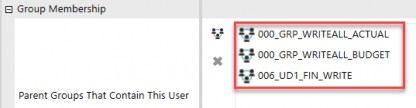
Figure 7.15
We will assume that access for the two user groups (000_GRP) shown in Figure 7.15 are as listed in Figure 7.16, below. Recalling our prior chapters, these 000 user groups contain 001–005 nested groups, which grant them group access to the various data and objects as needed.
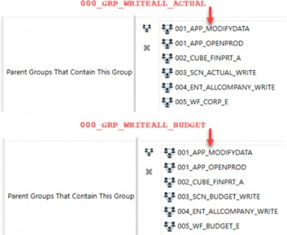
Figure 7.16
To test that slice security is working as designed, I like to set up a spreadsheet with the relevant intersections of data and then log in with the same security as this user and refresh the spreadsheet, as shown in Figure 7.17. Column A shows our cost center U1 dimension. Column B contains the Actual scenario, and Column C contains the Budget scenario.
Based on this user’s membership, slice security is working as designed. The No Access cells in the Budget column are the result of this user not appearing in slices 1 and 2 on the cube (Figure 7.14). Because this user is not in the all read or write U1 security groups, their access has been set to No Access in the first slice.
Because the user has been included in the security group 006_UD1_FIN_WRITE, we can see that in the Budget scenario, column C, they have input access (white cells) for the base Finance Cost Centers.
Lastly, because we mentioned that this slice security only applies to the Budget scenario in our use case, we can see for the Actual scenario of data (column B), they have full write access based upon the 000_GRP_WRITEALL_ACTUAL security group membership, as evidenced by all base cost centers appearing as white input intersections.
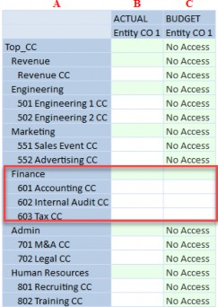
Figure 7.17
Let’s take another step and add this person into the slice to grant read access to engineering departments (006_UD1_ENG_READ), as shown in Figure 7.18.
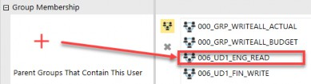
Figure 7.18
What does the spreadsheet look like now, when refreshed as that user? As you can see in Figure 7.19, this user has green cells (aka read-only) for the Engineering Cost Centers, which were previously No Access, while retaining white cells (input) for the Finance Cost Centers in the Budget column.
This is due to the Continue behavior we applied in Figure 7.14 on slices 3-14. Because we said a person may be in more than one cost center slice, as the remaining slices 3-14 are applied, they are Increase and Continue, which is what allows the security shown in Figure 7.19.
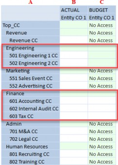
Figure 7.19
The above steps are one example of applying slice security to a combination of U1 and Scenario members. As discussed previously, the possible combinations of access across the 18 dimensions are almost limitless.
Figure 7.20 shows an additional example of how you may create 12 slices to apply time-based dynamic security to grant a set of users access to each closed month as the year progresses. As each month is closed and the Corporate users (000_GRP_CORPUSERS) are allowed to see a specific month’s data, each successive slice group (e.g., 006_TIME_M1_12NOACCESS) would be removed as a restriction on the Corporate users, allowing them to view each month’s data as it is closed.
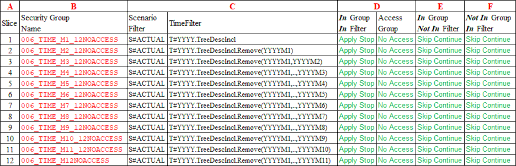
Figure 7.20
Advice for creating data slices in the most optimal manner are:
|
Because the possibilities are many, it is important to always keep in mind that you want to balance ease of use, control, and maintenance, as we mentioned in Chapter 2. The more slices and Member Filters you add, not only can there be performance implications, but maintenance becomes more challenging as well.
Other Security › Slice Security › Applying Slice Security
Data Cell Conditional Input Security
The second section of a cube’s Data Access tab allows the ability to conditionally provide access for all users to input data (or not) for a group of data cell(s).
Data Cell Conditional Input security is similar to the prior section on data cell access security with two key differentiators. Data cell conditional input is not tied to a security group because slices in this section apply to all users (including administrators), not a group of users. It is all users or no one! And this security is to strictly apply write security only; e.g., you cannot apply read and/or write using this slice security. As the name suggests, it is conditional “input” only!
Therefore, when configuring slices for a data cell conditional input rule, all users will either have access (or not have access) to input data to the data cells defined in the Member Filter. The starting point for setting up conditional slices is shown in Figure 7.21.
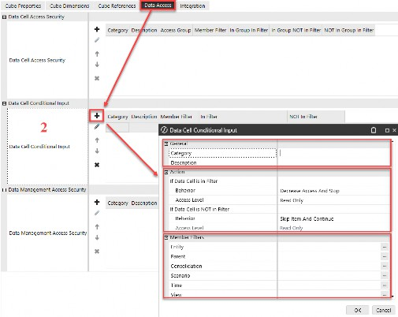
Figure 7.21
There are three parts (as opposed to four for data cell access) to creating a conditional slice:
General
Action
Member Filters
Other Security › Slice Security › Applying Slice Security › Data Cell Conditional Input Security
General
The Category and Description fields for conditional slices behave in the same manner as explained in the prior section for data access slices.
Other Security › Slice Security › Applying Slice Security › Data Cell Conditional Input Security
Action
There are only two items (as opposed to three for data cell access) in the Action section for conditional input security:
If Data Cell is in Filter
If Data Cell is NOT in Filter
And there are only two Access Levels associated with the behaviors above (again, as opposed to three for data cell access):
Read Only: Allows users to read cells in the filter.
All Access: Allows users to write to cells in the filter.
The same eight Behaviors apply to conditional slices as data access slices in the Action section. These eight items determine how each intersection of data is treated with no link to a security group (as it is all users or no one) for conditional input. All eight behaviors are the same as for Data Cell Access Security, with two exceptions:
Skip Item and Continue: Default if data cell is not in filter. All users or no one.
Skip Item and Stop: Same as prior section.
Apply Access and Continue: Default if data cell is in filter. All users or no one.
Apply Access and Stop: Same as prior section.
Increase Access and Continue: Same as prior section.
Increase Access and Stop: Same as prior section.
Decrease Access and Continue: Same as prior section.
Decrease Access and Stop: Same as prior section.
Other Security › Slice Security › Applying Slice Security › Data Cell Conditional Input Security
Member Filter
A Member Filter for data cell conditional input security is defined in the same way as explained in the prior section for data access slices (Figure 7.9).
Again, the conditional input slices behave much in the same way as the data access slices, except that conditional slices are not tied to a security group on the System > Security tab, which just means that conditional slices apply to all users the same. And, whereas native administrators bypass data cell access slices, they do not bypass conditional input slices.
Tips about conditional input data slices:
|
Lastly, you can only grant Read Only or All Access via conditional slices. The ability to grant No Access is not an option in this section since this section is focused on conditional input access for cells, not whether a person cannot see the cell altogether. No Access can only be achieved through the first data access section discussed previously.
Other Security › Slice Security › Applying Slice Security
Data Management Access Security
This third and final section of a cube’s Data Access tab provides a level of security when running processes from a data management (DM) sequence or step.
Before we get into the properties and behaviors of this section, it is important to review the other security that may impact a user’s ability to run a DM process.
Data management sequences can be launched from a number of different areas within OneStream:
Workflows
Dashboards
Data Management page
Other BRs that launch DM sequences
No matter where a person launches a data management sequence from, there are other pieces of security that must be in place.
Assuming you have granted the proper access to the Manage Data Group in the Scenario dimension, as well as access to the data management group, and write access to the Cube, Entity and Scenario dimensions (all previously covered in Chapter 5 of this book), then you can move on to applying a slice to data management access in this section.
So, what does the Data Management Access security slice on the Data Access tab of a cube give you beyond those items? It is used to control who has access to read or modify cube data during various data management processes.
DM sequences are focused on the cube Data Unit or the workflow Data Unit and not individual data cells. Data management access security is crucial for maintaining data integrity and ensuring that only authorized modifications are made to the cube data during specific processes.
Data management access security shares the same properties and behaviors as data cell access security described earlier in this chapter, with one minor exception. The only Member Filters available are for Entity and Scenario, as can be seen in Figure 7.22.
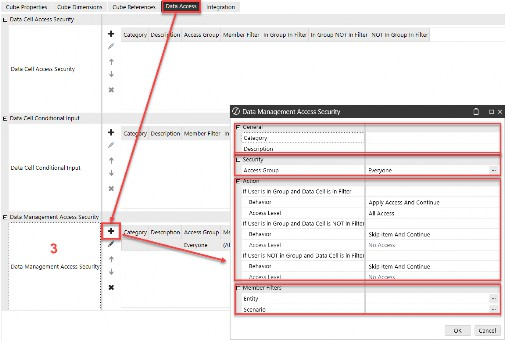
Figure 7.22
Other Security › Slice Security › Applying Slice Security › Data Management Access Security
General
The Category and Description fields for data management slices behave in the same manner as explained in the prior sections.
Other Security › Slice Security › Applying Slice Security › Data Management Access Security
Security
The Access Group is a security group that is set up on the System > Security tab, into which users are assigned and where data management access security roles apply.
Once more, you will want to use the naming convention established in Chapter 3 (e.g., 006_DM_BUDGETCALC, as an example).
Other Security › Slice Security › Applying Slice Security › Data Management Access Security
Action
Once again, and similar to the first section of slice security already discussed (data cell access security), the most important part of creating your slices is in the Action section. Here, you will define how security is applied depending on the same three criteria as with data cell access security:
User is in Group, and Data Cell is in Filter
User is in Group, and Data Cell is NOT in Filter
User is NOT in Group, and Data Cell is in Filter
The same eight Behaviors apply to data management slices as data access slices. These eight items determine how each intersection of data is treated when running a data management sequence in the same way as the Data Cell Access Security section:
Skip Item and Continue
Skip Item and Stop
Apply Access and Continue
Apply Access and Stop
Increase Access and Continue
Increase Access and Stop
Decrease Access and Continue
Decrease Access and Stop
There are three Access Levels associated with the behaviors, and are also identical to those for the Data Cell Access Security section:
No Access
Read Only
All Access
Other Security › Slice Security › Applying Slice Security › Data Management Access Security
Member Filter
The difference between Member Filters in data management access security and data cell access security or data cell conditional access security is that Entity and Scenario dimensions are the only options to which you can apply filters. The Member Filter focus is not at the data cell level but at the Data Unit level instead.
This concludes the section on Slice Security. Let’s move on to another way in which you can control how people input data.
Other Security
No Input BRs
Another way to control who has access to intersections of data is to apply a finance business rule to a cube(s) and use the ConditionalInput section to define rules around data cell input capability. These finance rules, often called No Input BRs or Conditional Input Rules, are set up as finance BRs, as shown in Figure 7.23.
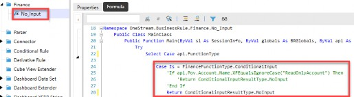
Figure 7.23
You will set up this finance BR and attach it to the cube where you want this condition to apply through BR 1-8.
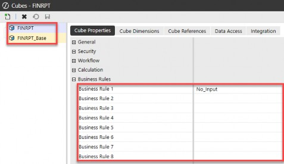
Figure 7.24
Within the Case Is = FinanceFunctionType.ConditionalInput section of a finance BR, you will write the conditions to which you want to apply no input access.
In a No Input BR, you have code to define criteria around who will be able to input (or not) to certain intersections of data:
IF, ELSE, END IF, ANDALSO, ORELSE>=<Api, args, and BRApi calls
All of the coding options available in a finance BR can be used to ultimately determine whether to flip a specific intersection to read-only. For example, you can use a No Input BR to check if a user is in a specific security group or not, before limiting their access to read-only.
Once you have gone through a series of IF statements to evaluate whether an intersection should be read-only, the last step in a No Input BR is to flip the cell status to read-only with a Return statement as follows:
Return ConditionalInputResultType.NoInput
You may be asking yourself, what is the difference between using a No Input BR attached to a cube versus applying data cell conditional input security slices on the cube?
If you recall from the earlier section, conditional slice security is not tied to a security group. These slices either allow or deny input access for all users, including native administrators.
However, the conditional input section of a finance BR can be used to check if a particular user belongs to a specific security group and then apply the conditions.
If the conditions are met within the No Input BR, you can only set the intersection to read. You cannot use No Input BRs to grant All Access or No Access, as you can with a conditional slice. Likewise, in a No Input BR, you cannot increase or decrease access as you can with conditional slice behaviors.
Using a No Input BR, as opposed to a conditional slice, requires coding. You are working with a BR and VB.NET or C# to create the conditions in which you want to restrict access to read-only. In setting up conditional slices on the cube, no coding is involved as the standard Member Filter builder applies.
Lastly, while conditional slices can have a negative impact on performance, using a No Input BR may have a greater negative performance impact. This is because No Input BRs are attached to the cube and run as part of the DUCS (Data Unit Calculation Sequence), whereas conditional no input slices will only run when a user is retrieving data in a Cube View, dashboard, or Excel.
So again, we come back to why you might choose one option over the other. With security, you always want to think about the ease of use and maintenance. If you have other data access security that you will apply to the cube, then perhaps you will want to keep your conditional input security also in the Data Access tab on the cube. In this way, an administrator does not have to look in multiple places to determine how security is being applied.
However, if you have no other data access needs involving slice security, or very few use cases in which this needs to apply, then you may want the flexibility that a No Input BR provides. And certainly, if you need to tie your conditional no input security to security groups or other items using API or BRAPI calls, then you will have to use a No Input BR because those conditions are not available in slices. Remember, slices do not involve code.
Like everything in OneStream, there is always more than one way to achieve a goal. It is up to you – as the consultant or administrator – to determine whether a conditional slice or conditional BR suits your business needs. Figure 7.25 summarizes the pros and cons of each of these security options.
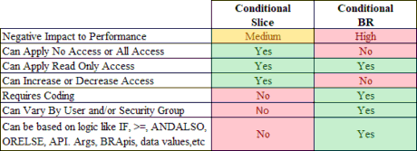
Figure 7.25
Now that we have covered additional data security (that you may choose to apply to your cube data), let us branch out again to security not involving cube data, but involving table-based and/or dashboard-based solutions available on the Solution Exchange.
Other Security
Solution Exchange Security
There are over 100 (and growing!) OneStream, Partner, and Community-developed solutions available on OneStream’s Solution Exchange. I cannot cover the security involved with all these tools, but I will cover the most popular tools and some security basics around using them.
First, nearly all Solution Exchange tools will require users who have access to ancillary tables. Why is this the case?
The tables that come with every customer application (the application tables discussed in prior chapters) are not considered ancillary tables. These tables are native tables within every customer application and environment. However, when you download and install a Solution Exchange tool, if these tools set up custom tables within your application, they are considered ancillary tables. They are not part of the core application tables that make up every customer application.
As such, OneStream users – other than users in the native administrators group – will not inherently have access to custom tables added into your application/environment. Therefore, the first step in allowing your user base to access any Solution Exchange tools will be to grant access to these ancillary tables.
In Chapter 6, we covered how to grant ancillary table access to your user base, so I will not cover that again. But just understand that users who view Solution Exchange tools will need access to the Access Group for Ancillary Tables.
For users who will be updating data in Solution Exchange tools (interacting and updating People Planning, account recs, etc.), those users will also need Maintenance Group for Ancillary Tables access.
The only group that will need Table Creation Group for Ancillary Tables will likely be your administrators, who are the ones who do the initial download and setup of these tools. This access is shown in Figure 7.26.

Figure 7.26
The second important item to point out with Solution Exchange tools is that most are launched from, or as, a dashboard. Therefore, to use these tools, a user will need access to either the Dashboard Profile or the Workflow Profile where the dashboard has been attached.
Below is an example for Account Reconciliation Manager, showing both the Dashboard Profile access for OnePlace (Figure 7.27), as well as Workflow Profile access (Figure 7.28).
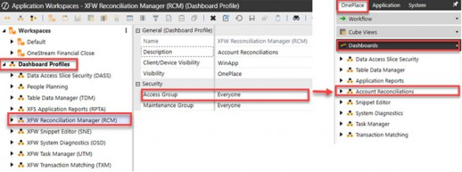
Figure 7.27
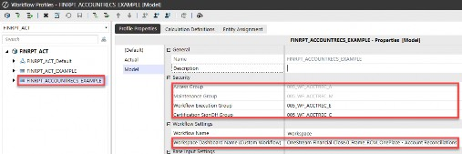
Figure 7.28
So, before a user can gain access to use the tools and proceed further, they will need both ancillary table access as well as Dashboard Profile and/or Workflow Profile access to launch these tools.
Now that we have covered basic access for Solution Exchange tools, let’s dive a little deeper and look at three popular Solution Exchange tools, and the added security that resides within them.
Other Security › Solution Exchange Security
Account Reconciliations
The Account Reconciliation solution (aka RCM or OFC) allows customers to deliver a level of data quality and risk reporting around substantiating their balance sheet information. As mentioned, once you have downloaded, loaded, and granted appropriate workflow access, there are additional layers of security within this tool.
Many of the Solution Exchange tools will have a Global Setup page where additional security can be applied, related to working within that solution. For Account Reconciliations, there are three additional security roles that can be applied for users working inside this tool, as shown in Figure 7.29.
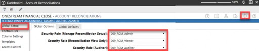
Figure 7.29
In addition to the Global Setup page, Account Reconciliations also has an Access Control page, which allows you to further expand how security works within this solution, as shown in Figure 7.30.
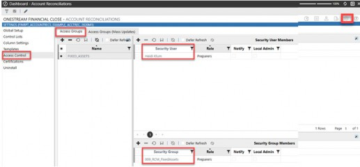
Figure 7.30
Lastly, within Account Reconciliations, you can even apply security to individual reconciliations within the Account Reconciliation Inventory by accessing the Show Administration Page, then selecting an individual reconciliation and clicking the Access icon, as shown in Figure 7.31.
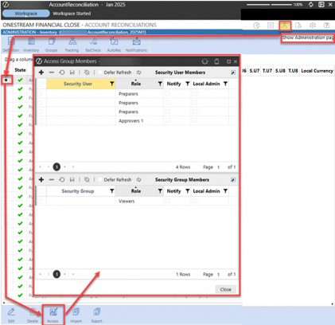
Figure 7.31
The point with the above figures is not to explain RCM security in detail (for that, I would suggest you read the OneStream Financial Close Handbook!) but instead to demonstrate that – with these Solution Exchange tools – some of them come with additional layers of security once you are within the tool.
Let’s take a look at another common Solution Exchange tool, People Planning, for which security questions quite often arise.
Other Security › Solution Exchange Security
People Planning
The People Planning solution enables detailed, complex, driver-based workforce planning within OneStream. Information is planned in a table-based solution and then integrated with your other cube data at a more summary level.
Like Account Reconciliations, there is also a Global Setup page where additional security can be applied, related to working within People Planning. There are two groups that can be administered: View Employee Name and Manage Calculation Definition, as shown in Figure 7.32.
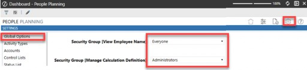
Figure 7.32
Another question that often comes up around the People Planning solution is the protection of sensitive employee salary data. Any individual in the native administrators group has full access to ancillary tables added to an application, which includes the tables and data for People Planning. Again, in Chapter 2, we talked about someone having the keys to the whole kingdom, and that is anyone in your native administrators group.
There are a few options if you do not want certain individuals to see salary, compensation, or employee data in the People Planning Register solution.
One option may be to use local admin groups other than the native administrators group. In this way, you could grant those individuals access to everything except the workflow where the People Planning dashboard is attached, and also restrict them from the database page on the System tab itself.
Another option is not to use employee names in your PLP register. Instead, you could use a unique identifier, such as employee IDs, for this data to maintain confidentiality.
A less preferred but possible option includes segregating the PLP data into its own OneStream application. Only grant people access to that app who can see salary data. You will still need one overall administrator, but you can greatly limit those who can get to the People Planning data.
Other Security › Solution Exchange Security
Task Manager
The last tool I will mention is Task Manager, which is a solution that provides a central place to monitor the collaboration and completion of processes by aggregating workflows, assigning tasks with dates, and communicating through emails and commentary. The tool can provide visibility into a Closing, Budget, or Forecast cycle, with charts and graphs to easily drill into and monitor process completion.
Like the other tools mentioned previously, users will need to have access to the Dashboard Profile to access this solution. From there, once inside the solution, further access can be granted by going to the Administration page.
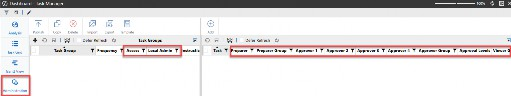
Figure 7.33
Tips for Solution Exchange security:
|
All Solution Exchange tools allow customers and partners to extend upon the core functionality within OneStream. Thus, you can extend your security model to include further restrictions inside these tools.
Other Security
BI Blend
BI Blend is a read-only aggregate storage model designed to support reporting on large volumes of data that are not appropriate to store in a traditional OneStream Cube. Because BI Blend involves data not stored within a cube, the security for BI Blend falls into a category of its own.
Like Solution Exchange tools, if BI Blend is employed within an application, it entails additional security above and beyond standard application security.
The security for BI Blend consists primarily of:
Access to the BI Blend database and tables
Access to Workflow(s)
Access to Dashboard(s)
Other Security › BI Blend
BI Blend Database
For customers using OneStream BI Blend for reporting and analysis within their application(s), a separate database (e.g., not the framework nor application databases discussed in prior chapters) is established by OneStream support as an external connection set up on the System Configuration page. This is shown in Figure 7.34.
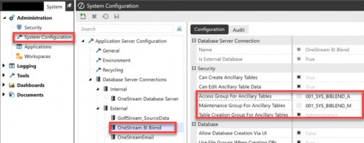
Figure 7.34
As we saw in Figure 7.26, you will want to grant your users access to Access Group for Ancillary Tables (001_SYS_BIBLEND_A) and Maintenance Group for Ancillary Tables (001_SYS_BIBLEND_M) accordingly. You will likely be able to keep the Table Creation Group for Ancillary Tables set to administrators in your BI Blend database, similar to what was done for the OneStream application database server.
Like the Solution Exchange tools that install and use custom tables within the OneStream Database Server connection, BI Blend has its own set of custom tables that reside in their own OneStream BI Blend external database connection on the System Configuration page.
Therefore, the first step to allow users to view or load BI Blend data is to grant access to these ancillary tables, as shown in Figure 7.34. Once that access has been granted, the remaining BI Blend security follows the workflow and dashboard security discussed in prior chapters. Let’s review these pieces below.
Other Security › BI Blend
BI Blend Workflow(s)
The interface to the BI Blend model is through a traditional OneStream workflow. The workflow is how data is loaded into the BI Blend database and tables, using cube dimensions, metadata and attributes to derive the aggregation points that are stored in the BI Blend database.
For a user to be able to load data into the BI Blend database, they will need workflow access (005_WF_BIBLEND_A) and execution (005_WF_BIBLEND_E), as shown in Figure 7.35.
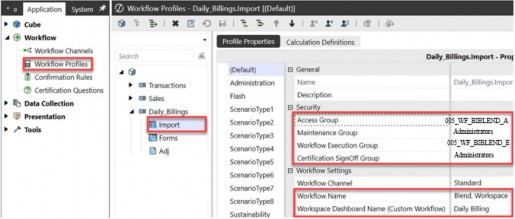
Figure 7.35
So, the second piece to establishing BI Blend security is, therefore, workflow access.
As we recall from Chapter 4, a typical person loading data to the cube needs the following access (recall Figure 4.8):
application security role to open an app (
001_APP_OPENPROD)application security role to modify data (
001_APP_MODIFYDATA)a cube (
002_CUBE_FINRPT) security groupwrite access to the Actual scenario (
003_SCN_ACTUAL_WRITE)write access to entities (
004_ENT_ALLCOMPANY_WRITE)access to the import workflow where data is loaded (
005_WF_CORP_A)execute to the import workflow where data is loaded (
005_WF_CORP_E)
However, a person loading BI Blend data will need slightly different access since the BI Blend data does not load to the cube but to a separate database. The typical data load profile for a BI Blend load user may look something like:
application security role to open an app (
001_APP_OPENPROD)access to the ancillary tables (
001_SYS_BIBLEND_A)modify to the ancillary tables (
001_SYS_BIBLEND_M)access to the import workflow where data is loaded (
005_WF_BIBLEND_A)execute to the import workflow where data is loaded (
005_WF_BIBLEND_E) This is shown in Figure 7.36.
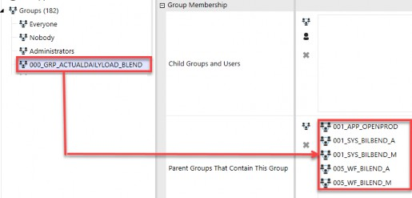
Figure 7.36
Other Security › BI Blend
BI Blend Dashboards
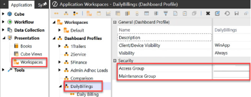
006_DB_BILEND_A
Administrators
The final piece of access required for users who will be consuming (aka viewing since BI Blend is a read-only tool) reports is access to a dashboard profile, which can either be presented to the user via OnePlace or via a workflow Workspace. In either case, the user will need access (006_DB_BIBLEND_A) to the BI Blend dashboard, as shown in Figure 7.37.
Figure 7.37
Once within a dashboard profile, additional parameters can be leveraged to further limit what data is presented to a user on the BI Blend reports. The parameters can be based on user security groups to limit what users can select in those parameters. Then,
Tips for BI Blend security:
|
in the SQL on the data adapter, those parameters can be fed into the WHERE clause to again restrict what information is presented to a person viewing BI Blend data.
In the next chapter, we will talk about the important concepts of testing, migrating, and reporting on security changes. Now that you are well-versed in designing and setting up your security, let’s talk about how to maintain it and report off it!